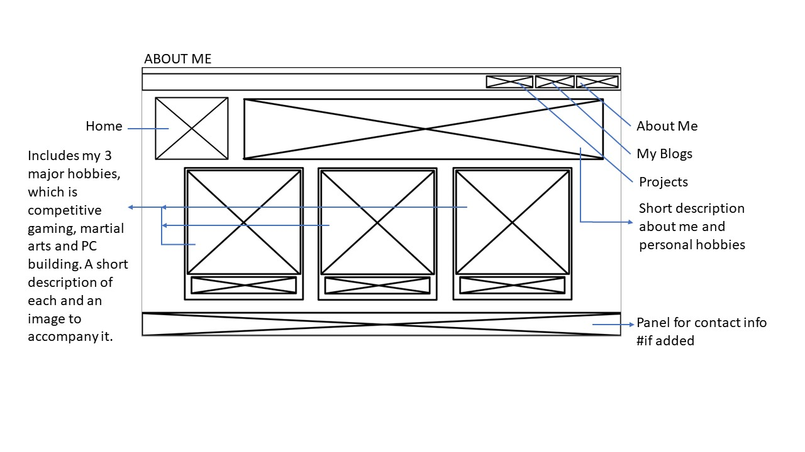
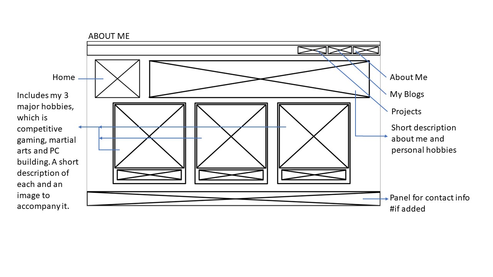

Old WireFrame


 

New WireFrame
Rationale:
My webpage is an expression of me and my creativity. It follows a vibrant cyber punk theme contrary to the general convention of websites being bland and monotoned. In my design I wanted to break this set convention while making a functional website that’s easy to navigate. While it will be easy to navigate, each section of the website should feel like its own. The way navigation takes place in each section should look and feel different, the exception being the navigation elements on the top of the scene which is displayed the same on every page with the same functionality. The reason for this is to keep the general aesthetic of the website throughout the website. All navigation elements have a distinctive look and color way that draws attention to it. A button also appears that when clicked on lets users go straight back to the top, this accommodates a satisfactory user experience. All navigation elements have feedback that communicate to the user that it is interactable.